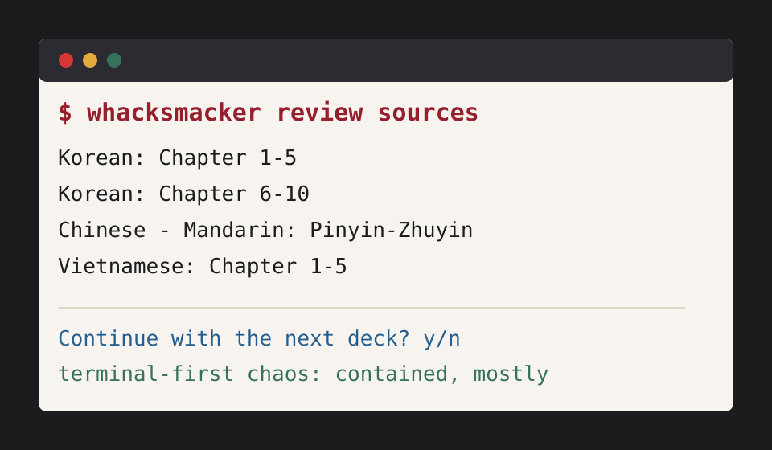

Development state
- Public development preview / pre-alpha.
- Not stable, not polished, and not ready for serious study routines.
- Package/content system in active development.
- Docker image exists, but it is still experimental.
Public development preview
language learning, review decks, and terminal-first chaos
WhackSmacker is a small, practical learning project built around curriculum packages, native review sources, package feeds, and a terminal-first workflow. It is not stable software yet. It is a public pre-alpha workshop with the doors open.

A local-first learning tool where curriculum modules publish review sources, the app installs them from a catalogue, and learners review decks without pretending the project is finished.
Package feeds, Docker usage, review UI work, and content correction are the active development path. The project is useful for validation, not stable public study yet.
Short project notes from Ashwin directly.
Hello everyone! Everything these days begins with a first post, so here it is. Yes, I am human, and yes, I’m writing this myself, but not for long. For the foreseeable future it will be my enormous guest, Mr./Mrs. Bot, who will provide the updates and all those things, starting below. Enjoy!
Hello everyone! It's me, your human host. So why the name you ask? Well you know, I just wasn't in the greatest mood the world has ever seen when I picked it, and then just stuck with it because why not. All right now our good friend will take over:
All of this is still pre-alpha. The app is usable for development testing and personal validation, not stable public study use. Review decks exist for multiple modules, but content quality is still being corrected.
Core curriculum exists and review decks are available in development builds.
Traditional track exists with Pinyin and Zhuyin support. The review-card model is implemented, including pronunciation/conversion decks.
Simplified track exists with Pinyin support. The review-card model is implemented, but content status should stay conservative while deck coverage settles.
Curriculum exists and the Japanese review-card model is implemented. Japanese remains special until generated review decks are fully ready.
Core curriculum exists and a review deck is available in development builds.
Core curriculum exists and a review deck is available in development builds.
Curriculum/module exists, but the status is still early and incomplete.
Curriculum/module exists, but the status is still early and incomplete.
Curriculum/module exists, but the status is still early and incomplete.
Fix Example sentence/source selection. Normal core review cards should use one to three literal examples from source/read content where expected. Invented example sentences should not be generated for review output. Chinese conversion-only pronunciation decks are exempt, and Japanese remains special until its generated review decks are ready.
Terminology content exists as a separate support module for language-learning work.
Math curriculum content exists separately from the language-learning modules.
A review source is the thing a learner actually studies: a deck-like set of prompts, answers, notes, and examples. Current examples include Korean chapter ranges, Chinese pronunciation conversion, and Vietnamese Chapter 1-5.
Modules are packaged and listed in a catalogue feed, currently exposed inside the
Docker image at /feed/catalogue.json. The app can point at that catalogue
and install the available learning packages.
The CLI is designed around local data, local progress, and explicit data paths. That is why the Docker command below mounts a user-owned WhackSmacker data directory.
The review interface, package metadata, examples, and language coverage are still moving. Expect sharp edges, missing polish, and occasional nonsense until the alpha line gets firmer.
The current public development image is
sleepiestmario/whacksmacker:latest. It is a pre-alpha convenience path,
not a stable release channel.
docker run --rm -it \
--user "$(id -u):$(id -g)" \
-e HOME=/data \
-v ~/.local/share/whacksmacker:/data \
sleepiestmario/whacksmacker:latest \
--data-dir /data \
--catalogue /feed/catalogue.json
The --user and HOME=/data parts keep generated progress and data
files owned by your normal user instead of root.
.deb.rpm